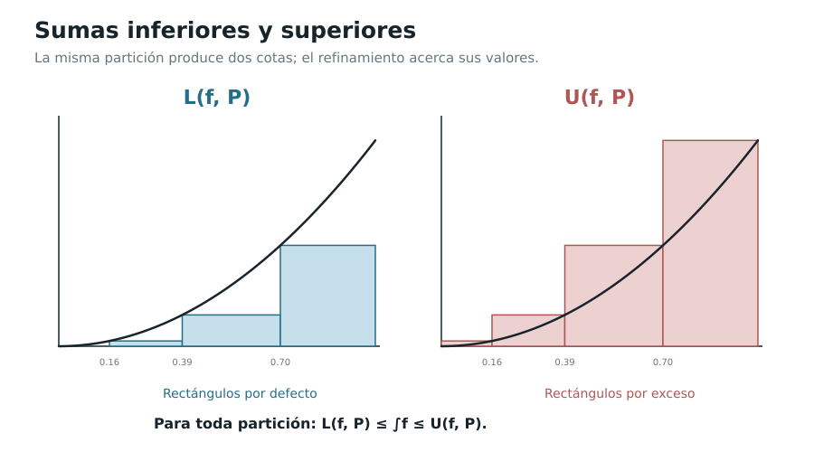

Capítulo 5. De las sumas a la integral
Índice del libro · Prefacio · Itinerarios
Exposición · Ejercicios · Soluciones · Notas históricas
Pregunta generadora. ¿Qué garantiza que todas las aproximaciones razonables de una acumulación —con particiones desiguales y muestras distintas— determinan un único número real? ¿Qué sucede cuando no lo hacen?
El problema de la cuadratura, examinado en el capítulo 4, nos enseñó a desconfiar de una operación que aparece como evidente en un dibujo. Los triángulos inscritos en una parábola producían cotas cada vez mejores; la función que toma el valor uno en los racionales y cero en los irracionales, en cambio, permitía fabricar sumas rectangulares de valores incompatibles. El paso decisivo no consiste simplemente en aumentar el número de rectángulos: consiste en definir qué debe permanecer estable cuando la elección de los rectángulos deja de estar fijada.
Ahora transformaremos ese problema geométrico en una construcción aritmética y analítica sobre \(\mathbb R\). Primero compararemos todas las particiones mediante sus sumas inferiores y superiores; después definiremos la integral por un encaje cuyo valor existe gracias a la completitud. Finalmente demostraremos que esa noción coincide con el límite de sumas de Riemann bajo una condición explícita de independencia respecto de las muestras y de la finura. Sólo entonces estaremos autorizados a usar el símbolo \(\int_a^b f(x)\,dx\) como un número demostrado, no como una conjetura pictórica.
Aquí la integral será construida sin buscar primitivas. La conexión entre esta operación y la derivación necesitará un argumento nuevo y ocupará el capítulo 6.
5.1. Qué estamos tratando de definir
Sean \(a,b\in\mathbb R\) con \(a<b\), y sea \(f:[a,b]\to\mathbb R\) una función acotada: existe \(B\ge0\) tal que \(|f(x)|\le B\) para todo \(x\in[a,b]\). El signo de \(f\) puede cambiar. La exigencia de acotación permite construir cotas finitas en cada subintervalo; la continuidad no forma parte de la definición general.
Una partición \(P\), ya presentada en EDC-C04-DEF-002, es una lista finita
\[ a=x_0<x_1<\cdots<x_n=b,\qquad \Delta_i=x_i-x_{i-1}>0, \qquad \|P\|=\max_{1\le i\le n}\Delta_i. \]
Una elección de etiquetas \(\xi=(\xi_1,\ldots,\xi_n)\), con \(\xi_i\in[x_{i-1},x_i]\), da la suma de Riemann finita
\[ S(f;P,\xi)=\sum_{i=1}^nf(\xi_i)\Delta_i. \]
Una suma aislada depende de \(P\) y, en general, también de \(\xi\). No diremos que una función es integrable sólo porque alguna sucesión especialmente elegida de sumas converja. El concepto deberá controlar la diversidad de elecciones.
Definición 5.1 (EDC-C05-DEF-001; cotas locales y sumas de Darboux). Para cada intervalo cerrado \(I_i=[x_{i-1},x_i]\) definimos
\[ m_i=\inf_{x\in I_i}f(x),\qquad M_i=\sup_{x\in I_i}f(x), \]
que son reales por acotación y completitud. Las sumas inferior y superior son, respectivamente,
\[ L(f,P)=\sum_{i=1}^nm_i\Delta_i, \qquad U(f,P)=\sum_{i=1}^nM_i\Delta_i. \]
Se cumple siempre
\[ L(f,P)\le S(f;P,\xi)\le U(f,P),\qquad U(f,P)-L(f,P)=\sum_i(M_i-m_i)\Delta_i\ge0. \]
No exigimos que los valores \(m_i\) o \(M_i\) sean efectivamente alcanzados: en general son ínfimos y supremos, no mínimos ni máximos. Cuando \(f\) es continua, el teorema de valores extremos de C00 garantiza además su realización. La cantidad \(M_i-m_i\) mide la oscilación de \(f\) en \(I_i\). La suma de oscilaciones multiplicadas por anchuras será nuestro indicador del error de aproximación.
5.2. Por qué los refinamientos importan
Definición 5.2 (EDC-C05-DEF-002; refinamiento común). Una partición \(R\) refina a \(P\) si contiene todos los puntos de \(P\) y acaso otros. Dos particiones \(P,Q\) admiten el refinamiento común \(P\cup Q\), formado por sus puntos reunidos y ordenados.
Lema 5.1 (EDC-C05-LEM-001; monotonía del refinamiento). Si \(R\) refina a \(P\), entonces
\[ L(f,P)\le L(f,R)\le U(f,R)\le U(f,P). \]
Demostración. Basta examinar la inserción de un punto \(z\) entre dos puntos consecutivos \(u<v\) de \(P\). Si \(m\) es el ínfimo de \(f\) en \([u,v]\) y \(m_1,m_2\) los ínfimos en \([u,z]\), \([z,v]\), entonces \(m\le m_1,m_2\); por tanto
\[ m(v-u)\le m_1(z-u)+m_2(v-z). \]
De forma dual, los supremos \(M_1,M_2\) sobre las partes no superan el supremo \(M\) del intervalo original, así que la suma superior no aumenta. Repetimos el argumento un número finito de veces. La desigualdad intermedia se sigue directamente de \(m_i\le M_i\). \(\square\)
Teorema 5.1 (EDC-C05-THM-001; compatibilidad entre particiones). Para cualesquiera particiones \(P,Q\) de \([a,b]\) se tiene
\[ L(f,P)\le U(f,Q). \]
Demostración. El refinamiento común \(R=P\cup Q\) cumple, por el Lema 5.1,
\[ L(f,P)\le L(f,R)\le U(f,R)\le U(f,Q). \]
No es necesario que \(P\) y \(Q\) tengan igual número de subintervalos ni puntos de corte comparables. \(\square\)
La conclusión permite tomar supremos e ínfimos sobre todas las particiones sin temor a que una cota inferior quede por encima de una superior. Ésa es la compatibilidad global que faltaba en los encajes aislados del capítulo anterior.

5.3. Construcción por completitud
El conjunto de sumas inferiores no es vacío: por ejemplo, la partición \(P=\{a,b\}\) produce una. Además, como \(|f|\le B\), todas las sumas inferiores y superiores pertenecen al intervalo \([-B(b-a),B(b-a)]\). Por tanto, la completitud real garantiza los siguientes números.
Definición 5.3 (EDC-C05-DEF-003; integrales inferior y superior). Para \(f\) acotada en \([a,b]\), llamamos
\[ \underline{\mathcal I}_a^b(f)=\sup_P L(f,P), \qquad \overline{\mathcal I}_a^b(f)=\inf_P U(f,P). \]
El Teorema 5.1 asegura
\[ \underline{\mathcal I}_a^b(f)\le \overline{\mathcal I}_a^b(f). \]
Definición 5.4 (EDC-C05-DEF-004; integral de Riemann–Darboux). Decimos que \(f:[a,b]\to\mathbb R\), acotada y con \(a<b\), es integrable si
\[ \underline{\mathcal I}_a^b(f)=\overline{\mathcal I}_a^b(f). \]
El valor común se denota por
\[ \boxed{\int_a^b f(x)\,dx}. \]
La letra \(x\) es una variable muda: \(\int_a^b f(t)\,dt\) designa el mismo número. La notación no exige que \(f\ge0\); si la función toma valores negativos, la integral representa acumulación con signo y no el área geométrica no negativa entre la gráfica y el eje.
Teorema 5.2 (EDC-C05-THM-002; criterio de Darboux). Una función acotada \(f:[a,b]\to\mathbb R\) es integrable si y sólo si
\[ \forall\varepsilon>0\ \exists P:\quad U(f,P)-L(f,P)<\varepsilon. \]
Demostración. Si hay particiones con diferencias arbitrariamente pequeñas, para cada una tenemos
\[ 0\le\overline{\mathcal I}_a^b(f)-\underline{\mathcal I}_a^b(f) \le U(f,P)-L(f,P)<\varepsilon, \]
pues las integrales inferior y superior quedan, respectivamente, por encima de \(L(f,P)\) y por debajo de \(U(f,P)\). La diferencia no negativa tiene que ser cero.
Recíprocamente, sea \(I\) el valor común de las integrales. Por la definición de ínfimo existe una partición \(P_1\) con \(U(f,P_1)<I+\varepsilon/2\), y por la definición de supremo hay otra \(P_2\) con \(L(f,P_2)>I-\varepsilon/2\). Para \(R=P_1\cup P_2\), el Lema 5.1 da
\[ 0\le U(f,R)-L(f,R) \le U(f,P_1)-L(f,P_2)<\varepsilon. \]
El refinamiento común es indispensable: no hemos supuesto que las dos particiones elegidas sean iguales. \(\square\)
La fórmula del criterio muestra qué significa que la función «admita área por rectángulos»: podemos encerrar todas las sumas etiquetadas de una partición entre dos números cuya diferencia es menor que cualquier tolerancia. Aún falta distinguir este criterio de una afirmación sobre todas las particiones suficientemente finas.
5.4. El desafío de las muestras arbitrarias
Hay una sutileza. El criterio anterior sólo exige alguna partición con pequeña diferencia superior–inferior. La definición usual mediante sumas de Riemann exige que cada partición suficientemente fina, con cualquier elección de muestras, produzca una suma próxima al mismo número. La equivalencia requiere una prueba adicional; no basta confundir esos dos cuantificadores.
Lema 5.2 (EDC-C05-LEM-002; estabilidad para particiones finas). Supongamos \(|f(x)|\le B\) en \([a,b]\) y fijemos una partición \(P_0\) con \(r\) puntos interiores. Entonces toda partición \(Q\) satisface
\[ \begin{aligned} U(f,Q)&\le U(f,P_0)+2Br\,\|Q\|,\\ L(f,Q)&\ge L(f,P_0)-2Br\,\|Q\|. \end{aligned} \]
En consecuencia,
\[ U(f,Q)-L(f,Q)\le U(f,P_0)-L(f,P_0)+4Br\,\|Q\|. \]
Demostración. Llamemos intervalo conflictivo de \(Q\) al que contiene en su interior al menos un punto interior de \(P_0\). Hay a lo sumo \(r\) intervalos conflictivos, porque los intervalos de \(Q\) tienen interiores disjuntos; la suma de sus longitudes no supera \(r\|Q\|\). Cada intervalo no conflictivo está contenido en algún subintervalo de \(P_0\), de modo que su aporte a \(U(f,Q)\) no supera el que se obtendría empleando el supremo de \(f\) sobre ese subintervalo de \(P_0\). En los intervalos conflictivos, el aporte de la suma superior puede exceder esta comparación por, a lo sumo, \(2B\) veces la longitud total conflictiva: tanto el supremo local como cualquier valor de comparación pertenecen a \([-B,B]\). Esto demuestra la primera desigualdad. El argumento para las sumas inferiores es dual. Restarlas produce la tercera. Si \(r=0\) las desigualdades son exactas, y si \(B=0\) todas las sumas son cero. \(\square\)
Teorema 5.3 (EDC-C05-THM-003; equivalencia con sumas de Riemann). Para una función acotada \(f:[a,b]\to\mathbb R\) son equivalentes:
- \(f\) es integrable en el sentido de Darboux y \(I=\int_a^b f\).
- Existe \(I\in\mathbb R\) tal que, para todo \(\varepsilon>0\), hay \(\delta>0\) con la propiedad de que para toda partición \(P\) con \(\|P\|<\delta\) y para toda elección de muestras \(\xi_i\in[x_{i-1},x_i]\),
\[ \left|S(f;P,\xi)-I\right|<\varepsilon. \]
El número \(I\) de ambas formulaciones es el mismo.
Demostración. Supongamos integrabilidad y fijemos \(\varepsilon>0\). El Teorema 5.2 da una partición \(P_0\) con \(U(f,P_0)-L(f,P_0)<\varepsilon/2\). Por el Lema 5.2, si \(Q\) es suficientemente fina, \(U(f,Q)-L(f,Q)<\varepsilon\). Tanto la suma etiquetada \(S(f;Q,\xi)\) como el valor integral \(I\) pertenecen al intervalo \([L(f,Q),U(f,Q)]\); de ahí \(|S-I|<\varepsilon\) para toda elección de etiquetas.
Recíprocamente, supongamos la condición 2. Dado \(\varepsilon>0\), elijamos una partición de finura menor que el \(\delta\) correspondiente a tolerancia \(\varepsilon/4\). Todas sus sumas etiquetadas están entre \(I-\varepsilon/4\) e \(I+\varepsilon/4\). La suma inferior es el ínfimo de tales sumas cuando se varían independientemente las etiquetas en cada subintervalo, y la suma superior es su supremo; esta afirmación se obtiene aproximando cada ínfimo o supremo local con error menor que \(\eta/[n\max\{1,b-a\}]\) y sumando los \(n\) errores ponderados. Por tanto \(L(f,P)\ge I-\varepsilon/4\) y \(U(f,P)\le I+\varepsilon/4\), así que \(U-L\le\varepsilon/2<\varepsilon\). El criterio de Darboux demuestra integrabilidad. Por la primera mitad, las sumas etiquetadas de una función integrable convergen al valor Darboux; su límite es único por los resultados de C00, luego éste tiene que ser \(I\). \(\square\)
Advertencia de interpretación. «La malla se hace fina» no significa meramente que el número de subintervalos crece. Una partición puede contener miles de segmentos diminutos y conservar uno de longitud \(1/2\). El cuantificador de finura controla el mayor subintervalo y, a diferencia de una sola sucesión elegida a conveniencia, controla todas las etiquetas.
5.5. Cuándo existe la integral
Teorema 5.4 (EDC-C05-THM-004; continuidad e integrabilidad). Si \(f:[a,b]\to\mathbb R\) es continua, con \(a<b\), entonces es integrable.
Demostración. La continuidad en el intervalo cerrado garantiza acotación (EDC-C00-THM-007) y continuidad uniforme (EDC-C00-THM-008). Dado \(\varepsilon>0\), elegimos \(\eta=\varepsilon/[2(b-a)]\). Existe \(\delta>0\) tal que \(|f(x)-f(y)|<\eta\) cuando \(x,y\in[a,b]\) y \(|x-y|<\delta\). Tomemos una partición con \(\|P\|<\delta\). En cada subintervalo, el máximo y el mínimo existen, y su diferencia es menor que \(\eta\). Por ello
\[ 0\le U(f,P)-L(f,P) =\sum_i(M_i-m_i)\Delta_i <\eta(b-a)=\varepsilon/2<\varepsilon. \]
El Teorema 5.2 concluye la prueba. Es exactamente el control preparatorio demostrado en C04, ahora empleado dentro de la definición formal de integral. \(\square\)
Teorema 5.5 (EDC-C05-THM-005; monotonía e integrabilidad). Si \(f:[a,b]\to\mathbb R\) es monótona, es integrable, aunque pueda tener discontinuidades.
Demostración. Supongamos que \(f\) es no decreciente. En cada subintervalo el ínfimo y el supremo son sus valores en los extremos. Así,
\[ \begin{aligned} U(f,P)-L(f,P) &=\sum_i\bigl(f(x_i)-f(x_{i-1})\bigr)\Delta_i\\ &\le\|P\|\sum_i\bigl(f(x_i)-f(x_{i-1})\bigr)\\ &=\|P\|\bigl(f(b)-f(a)\bigr). \end{aligned} \]
La suma final telescopa. Si \(f(b)=f(a)\), la función es constante; si no, basta escoger una partición de finura tan pequeña que el producto sea menor que \(\varepsilon\). Para una función no creciente aplicamos el mismo argumento a \(-f\). La continuidad no se ha supuesto. \(\square\)
Lema 5.3 (EDC-C05-LEM-003; funciones concentradas en pocos puntos). Si \(h:[a,b]\to\mathbb R\) es acotada y vale cero salvo en un conjunto finito \(F\), entonces es integrable y \(\int_a^b h=0\).
Demostración. Sea \(|h|\le B\) y \(|F|=N\). En una partición \(P\), sólo pueden contribuir a \(U(h,P)-L(h,P)\) los subintervalos que contienen algún punto de \(F\); un punto de la partición puede pertenecer a dos intervalos adyacentes. En consecuencia hay a lo sumo \(2N\) intervalos que contribuyen, cuya longitud total no supera \(2N\|P\|\). En cada uno la oscilación de \(h\) es, a lo sumo, \(2B\). Resulta
\[ 0\le U(h,P)-L(h,P)\le4BN\|P\|. \]
Así \(h\) es integrable. Además, dado \(\varepsilon>0\) y particiones cada vez más finas, toda suma etiquetada satisface \(|S(h;P,\xi)|\le2BN\|P\|\to0\) porque sólo los intervalos que contienen \(F\) pueden aportar un valor distinto de cero. Por el Teorema 5.3, su integral es cero. \(\square\)
La última afirmación es finita, no una autorización para modificar una función en un conjunto numerable arbitrario. Que algo sea verdadero para cinco puntos no demuestra que lo sea para infinitos puntos, por dispersos que parezcan.
5.6. Dos funciones que revelan los límites del concepto
La función indicatriz de los racionales en \([0,1]\) es
\[ d(x)=\begin{cases}1,&x\in\mathbb Q,\\0,&x\notin\mathbb Q.\end{cases} \]
Cada subintervalo no degenerado contiene racionales e irracionales (EDC-C00-LEM-003). Por consiguiente, en toda partición se tiene \(m_i=0\), \(M_i=1\), y
\[ L(d,P)=0,\qquad U(d,P)=1. \]
Así \(\underline{\mathcal I}_0^1(d)=0\) y \(\overline{\mathcal I}_0^1(d)=1\): no existe integral de Riemann–Darboux para \(d\). El problema no procede de falta de acotación ni de un dibujo mal construido: procede de que las oscilaciones persisten en todo subintervalo.
Ahora definamos \(s_c(x)=0\) para \(x<c\) y \(s_c(x)=1\) para \(x\ge c\), con \(a<c<b\). La función tiene un salto, pero es monótona, luego integrable por el Teorema 5.5. Su valor puede determinarse sin primitivas: para cualquier \(\eta>0\) suficientemente pequeño, tomemos una partición que incluya \(c-\eta\) y \(c\). Fuera del intervalo \([c-\eta,c]\), las sumas inferiores y superiores coinciden con la longitud total de la parte situada a la derecha de \(c\), a saber, \(b-c\). El subintervalo de longitud \(\eta\) tiene ínfimo \(0\) y supremo \(1\), por lo que
\[ L(s_c,P)=b-c,\qquad U(s_c,P)=b-c+\eta. \]
Dejando \(\eta\) arbitrariamente pequeño obtenemos
\[ \boxed{\int_a^b s_c(x)\,dx=b-c.} \]
Por último, la función que vale \(7\) en un solo punto \(c\) y \(0\) en los demás tiene integral cero por el Lema 5.3. La existencia de la integral no equivale a continuidad de la función, ni tampoco toda discontinuidad impide integrar.
5.7. Propiedades algebraicas y de orden
Teorema 5.6 (EDC-C05-THM-006; linealidad). Sean \(f,g:[a,b]\to\mathbb R\) integrables y \(\alpha,\beta\in\mathbb R\). Entonces \(\alpha f+\beta g\) es integrable y
\[ \int_a^b(\alpha f(x)+\beta g(x))\,dx =\alpha\int_a^b f(x)\,dx+\beta\int_a^b g(x)\,dx. \]
Demostración. Para cada partición y etiquetas, la identidad finita
\[ S(\alpha f+\beta g;P,\xi) =\alpha S(f;P,\xi)+\beta S(g;P,\xi) \]
es algebraicamente exacta. Por el Teorema 5.3, todas las sumas de \(f\) y de \(g\) convergen a sus respectivas integrales cuando \(\|P\|\to0\), uniformemente respecto de las etiquetas. La desigualdad triangular da, para la combinación, un error a lo sumo \(|\alpha|\) veces el error de \(f\) más \(|\beta|\) veces el de \(g\). Elegimos un mismo umbral de finura que haga esa suma menor que cualquier tolerancia. La caracterización por sumas de Riemann concluye la integrabilidad y la fórmula. \(\square\)
Teorema 5.7 (EDC-C05-THM-007; orden y estimaciones). Si \(f,g\) son integrables en \([a,b]\) y \(f(x)\le g(x)\) para todo \(x\), entonces
\[ \int_a^b f\le\int_a^b g. \]
Si \(m\le f(x)\le M\), se cumple
\[ m(b-a)\le\int_a^b f\le M(b-a). \]
En particular, si \(|f(x)|\le B\), entonces \(\left|\int_a^b f\right|\le B(b-a)\).
Demostración. Para toda partición etiquetada, \(S(f;P,\xi)\le S(g;P,\xi)\). El Teorema 5.3 permite pasar al límite con las mismas etiquetas, conservando el orden; si fallara en los límites, una tolerancia igual a la mitad de su separación produciría una contradicción. Las cotas por constantes se obtienen comparando con las funciones constantes \(m\) y \(M\), cuyas sumas valen exactamente \(m(b-a)\) y \(M(b-a)\). \(\square\)
Proposición 5.1 (EDC-C05-PRP-001; producto). Si \(f,g\) son integrables y acotadas en \([a,b]\), también lo es \(fg\).
Demostración. Tomemos \(|f|\le A\), \(|g|\le B\). Para \(x,y\) de cualquier subintervalo \(I\),
\[ |f(x)g(x)-f(y)g(y)| \le A|g(x)-g(y)|+B|f(x)-f(y)|. \]
Al tomar supremos sobre parejas \(x,y\in I\), se obtiene
\[ \operatorname{osc}_I(fg) \le A\operatorname{osc}_I(g)+B\operatorname{osc}_I(f). \]
El criterio de Darboux proporciona una partición con oscilación ponderada pequeña para \(f\) y otra para \(g\); tomamos su refinamiento común, que no aumenta las diferencias de sumas. En éste,
\[ U(fg,P)-L(fg,P) \le A\bigl[U(g,P)-L(g,P)\bigr]+B\bigl[U(f,P)-L(f,P)\bigr], \]
y el lado derecho puede hacerse arbitrariamente pequeño. \(\square\)
El resultado no autoriza a afirmar que \(\int fg=(\int f)(\int g)\): esa identidad es generalmente falsa. Por ejemplo, para \(f(x)=g(x)=x\) en \([0,1]\) la integral del producto es \(1/3\), mientras el producto de integrales vale \(1/4\).
Proposición 5.2 (EDC-C05-PRP-002; valor absoluto y perturbaciones). Si \(f\) es integrable, entonces \(|f|\) también es integrable y
\[ \left|\int_a^b f\right|\le\int_a^b |f|. \]
Si además \(g\) es integrable, entonces
\[ \left|\int_a^b f-\int_a^b g\right| \le (b-a)\sup_{x\in[a,b]}|f(x)-g(x)|. \]
Demostración. La desigualdad \(||u|-|v||\le|u-v|\) implica que la oscilación de \(|f|\) en cualquier subintervalo no supera la de \(f\); por Darboux, \(|f|\) es integrable. La primera desigualdad sigue de \(-|f|\le f\le|f|\) y del orden. Para la segunda, aplicar la linealidad a \(h=f-g\), cuya cota en valor absoluto es el supremo indicado, y luego el Teorema 5.7. \(\square\)
Ésta es una estimación del error particularmente útil en aproximación: si dos funciones integrables son cercanas en todos los puntos, sus acumulaciones también lo son, con un factor de escala igual a la longitud del intervalo.
5.8. Cortar y reunir intervalos
Teorema 5.8 (EDC-C05-THM-008; aditividad por intervalos). Sean \(a<c<b\) y \(f:[a,b]\to\mathbb R\) acotada. La función es integrable en \([a,b]\) si y sólo si sus restricciones son integrables en \([a,c]\) y \([c,b]\). Cuando se cumplen esas condiciones,
\[ \int_a^b f(x)\,dx =\int_a^c f(x)\,dx+\int_c^b f(x)\,dx. \]
Demostración. Supongamos que \(f\) es integrable en \([a,b]\). Dado \(\varepsilon>0\), elegimos por el Teorema 5.2 una partición \(P\) con \(U(f,P)-L(f,P)<\varepsilon\). Refinamos con el punto \(c\). La nueva diferencia sigue siendo menor que \(\varepsilon\) y se descompone exactamente como suma de las diferencias (no negativas) de las dos particiones restringidas. Por tanto cada diferencia parcial es menor que \(\varepsilon\); el criterio demuestra la integrabilidad de ambas restricciones.
Recíprocamente, si las dos restricciones son integrables, para cualquier \(\varepsilon>0\) elegimos una partición del primer intervalo cuya diferencia superior–inferior sea menor que \(\varepsilon/2\) y otra del segundo con la misma propiedad. Uniéndolas obtenemos una partición de \([a,b]\) con diferencia menor que \(\varepsilon\). Esto demuestra la integrabilidad global.
Finalmente, las sumas etiquetadas para particiones que contienen a \(c\) se descomponen exactamente en las sumas de cada lado. Refinando ambas zonas hasta hacer su finura arbitrariamente pequeña, el Teorema 5.3 permite pasar al límite y obtener la identidad de integrales. \(\square\)
Definición 5.5 (EDC-C05-DEF-005; intervalo degenerado y orientación). Para una función definida en un intervalo que contiene \(a\) y \(b\), fijamos
\[ \int_a^a f=0,\qquad \int_b^a f=-\int_a^b f\quad\text{si }a<b \]
siempre que la integral del intervalo no orientado exista. Con esta convención, la aditividad se extiende a cualquier orden de tres extremos pertenecientes al mismo intervalo de integrabilidad: no es un nuevo teorema que todo signo pueda ignorarse.
5.9. El valor medio de una acumulación
Teorema 5.9 (EDC-C05-THM-009; valor medio integral). Si \(f:[a,b]\to\mathbb R\) es continua y \(a<b\), existe \(c\in[a,b]\) tal que
\[ \boxed{\int_a^b f(x)\,dx=f(c)(b-a).} \]
Demostración. Por continuidad, \(f\) es integrable (Teorema 5.4) y alcanza un mínimo \(m\) y un máximo \(M\) (C00). El Teorema 5.7 asegura
\[ m\le\frac1{b-a}\int_a^b f(x)\,dx\le M. \]
Como la imagen de una función continua en un intervalo contiene todos los valores entre \(m\) y \(M\) (EDC-C00-THM-006), existe un punto \(c\) donde el valor de \(f\) es exactamente ese promedio. \(\square\)
Para \(f\) meramente integrable no podemos asegurar que el promedio sea alcanzado como valor puntual. Consideremos en \([0,1]\) la función \(f(x)=0\) si \(x\le1/2\) y \(f(x)=1\) si \(x>1/2\). Es monótona e integrable, y su integral vale \(1/2\); sin embargo, su imagen es \(\{0,1\}\) y no contiene el valor promedio \(1/2\). La continuidad es la hipótesis que garantiza que el promedio pertenezca a la imagen.
5.10. Calcular sin el Teorema Fundamental
Ya podemos volver a las cuadraturas de C04. Las sumas superiores e inferiores de \(x^2\) en \([0,1]\), para la partición uniforme de \(n\) subintervalos, eran
\[ L_n=\frac13-\frac1{2n}+\frac1{6n^2},\qquad U_n=\frac13+\frac1{2n}+\frac1{6n^2}. \]
La diferencia \(U_n-L_n=1/n\) tiende a cero; por Darboux la función es integrable. El valor integral queda entre ambas sumas para cada \(n\) y el encajonamiento de C00 identifica
\[ \boxed{\int_0^1x^2\,dx=\frac13.} \]
Asimismo, para cada entero \(p\ge1\), el Teorema 4.3 proporciona, sin recurrir a primitivas,
\[ \int_0^1x^p\,dx=\frac1{p+1}. \]
La coincidencia con la cuadratura parabólica de C04 también puede verificarse sin ningún teorema de cambio de variable. Para \(g(x)=k(x-a)(b-x)\) sobre \([a,b]\), con \(d=b-a>0\) y \(k>0\), usamos la partición uniforme \(x_i=a+id/n\) y etiquetas derechas. Su suma es exactamente
\[ S_n(g)=kd^3\frac1n\sum_{i=1}^n\left(\frac in-\frac{i^2}{n^2}\right). \]
Las identidades finitas de sumas de primeras y segundas potencias muestran que \(S_n(g)\to kd^3(1/2-1/3)=kd^3/6\). Como \(g\) es continua, su integral existe y todas las sumas suficientemente finas tienen ese límite. Por consiguiente,
\[ \int_a^b k(x-a)(b-x)\,dx=\frac{k(b-a)^3}{6}=\frac43T, \]
reproduciendo desde la teoría integral el valor geométrico ya demostrado en EDC-C04-THM-002. No hemos tomado el resultado geométrico como axioma para definir la integral ni utilizado una sustitución integral todavía no probada.
En un intervalo \([a,b]\) la integral de una constante \(k\) es \(k(b-a)\); esto se sigue porque todas sus sumas finitas son iguales a ese número. Combinando tales resultados con la linealidad podemos evaluar diversos polinomios de forma independiente del Teorema Fundamental.
Proposición 5.3 (EDC-C05-PRP-003; polinomios en \([0,1]\)). Para \(p(x)=\sum_{j=0}^N c_jx^j\), con coeficientes reales,
\[ \int_0^1p(x)\,dx=\sum_{j=0}^N\frac{c_j}{j+1}. \]
Demostración. El término \(j=0\) es constante y los demás tienen integral conocida por la cuadratura numérica de C04. La linealidad, aplicada un número finito de veces, produce la identidad. \(\square\)
Esta fórmula coincide con la que en el capítulo 6 obtendremos mediante el vínculo entre derivada e integral. El hecho de reconocer hoy un patrón no permite utilizar retrospectivamente el Teorema Fundamental como premisa para construirlo.
5.11. Qué representa el número obtenido
Cuando \(f\ge0\), la integral es compatible con la interpretación geométrica mediante rectángulos inscritos y circunscritos. Para una función con signo, en cambio, la integral añade acumulaciones positivas y negativas. La función constante \(f=-2\) en \([0,3]\) tiene integral \(-6\), mientras el área geométrica entre la gráfica y el eje es \(6\) unidades cuadradas. Esa distinción evita confundir desplazamiento con distancia recorrida.
Si \(v(t)\) representa una velocidad con unidades de longitud dividida por tiempo, una suma \(\sum_i v(\xi_i)\Delta t_i\) tiene unidades de longitud. Su límite, cuando \(v\) es integrable, define matemáticamente un desplazamiento acumulado. Interpretarlo como posición efectiva de un sistema físico demanda aceptar el modelo de aproximación y sus hipótesis; no hemos demostrado todavía que la derivada de esa acumulación devuelva \(v(t)\) en todos los puntos. Eso será el contenido de C06 cuando la velocidad sea continua.
La integral de una densidad lineal \(\rho(x)\) tiene unidades de masa; la integral de una tasa temporal de ingreso, unidades de dinero. La estructura matemática es común, pero las interpretaciones no son intercambiables sin atender a las magnitudes.
5.12. Una definición conquistada, un vínculo todavía pendiente
El resultado de este capítulo puede resumirse mediante una cadena de afirmaciones demostradas:
\[ \begin{gathered} \text{particiones y cotas locales}\\ \Downarrow\\ \text{sumas inferiores y superiores compatibles}\\ \Downarrow\\ \underline{\mathcal I}_a^b(f)\le\overline{\mathcal I}_a^b(f)\\ \Downarrow\quad\text{(igualdad cuando el error puede agotarse)}\\ \text{integral de Riemann--Darboux}\\ \Longleftrightarrow\\ \text{límite común de todas las sumas etiquetadas finas}. \end{gathered} \]
La continuidad y la monotonía resultaron condiciones suficientes de integrabilidad; la función de Dirichlet mostró por qué la acotación no basta. Probamos linealidad, orden, productos, aditividad por intervalos y la interpretación del valor medio continuo. Estas propiedades hacen de la integral una teoría matemática autónoma.
Todavía no sabemos, como teorema general, cómo encontrar el valor de una integral buscando una función cuya derivada coincida con el integrando. Tal operación no fue empleada para definir ni justificar los resultados de C05. En EDC-C06 veremos que dos desarrollos antes independientes —variación y acumulación— se encuentran en el Teorema Fundamental del Cálculo.
Mapa de dependencias
- C00: axioma de completitud y supremo/ínfimo, límites, valor intermedio, extremos y continuidad uniforme.
- C04: particiones y finura, sumas finitas, estimación preparatoria para funciones continuas, sumas cuadráticas y potencias.
- C01–C03: ninguno de sus teoremas de derivación se usa para definir la integral; algunos cálculos especiales de C04 ya contenían el teorema del valor medio de C03.
- C05:
EDC-C05-THM-001--009, tres lemas, tres proposiciones y cinco definiciones, con independencia de C06. - Excluidos: integrales impropias, Lebesgue, teoremas de medida, convergencia uniforme sistemática y Teorema Fundamental del Cálculo.
- Historia: notas históricas y procedencia de fuentes.
Trabajo del lector
Los ejercicios del capítulo distinguen el reconocimiento del valor integral, las pruebas de existencia y la auditoría de cuantificadores. Sus soluciones desarrolladas permanecen separadas de la exposición, sin adelantar procedimientos del capítulo siguiente.